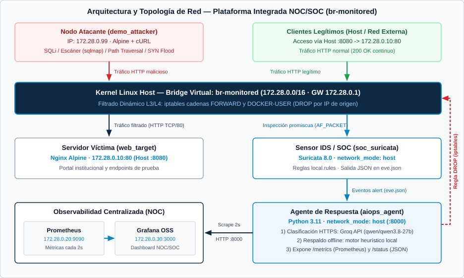
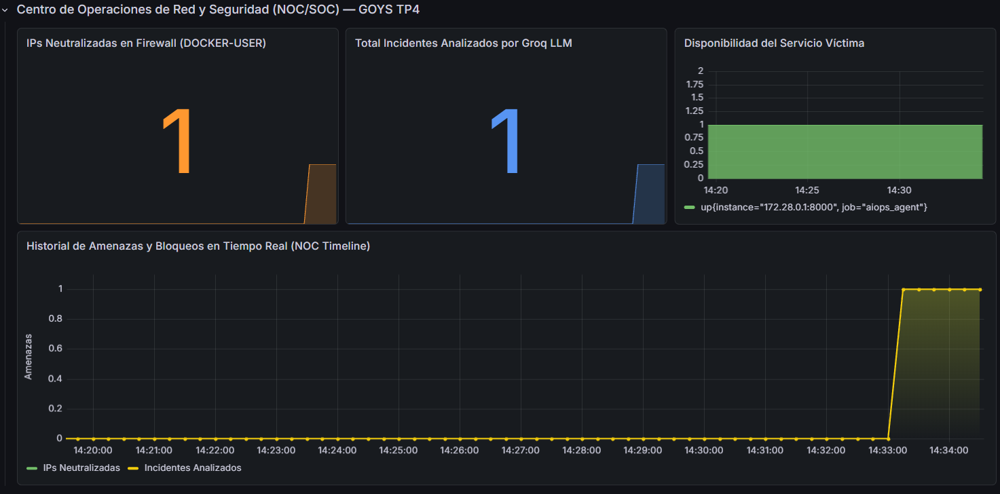
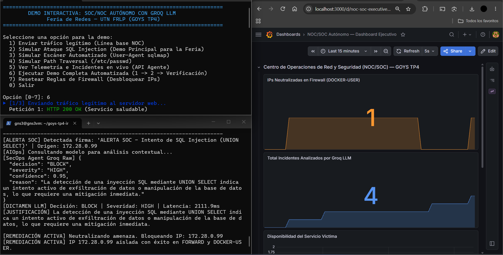
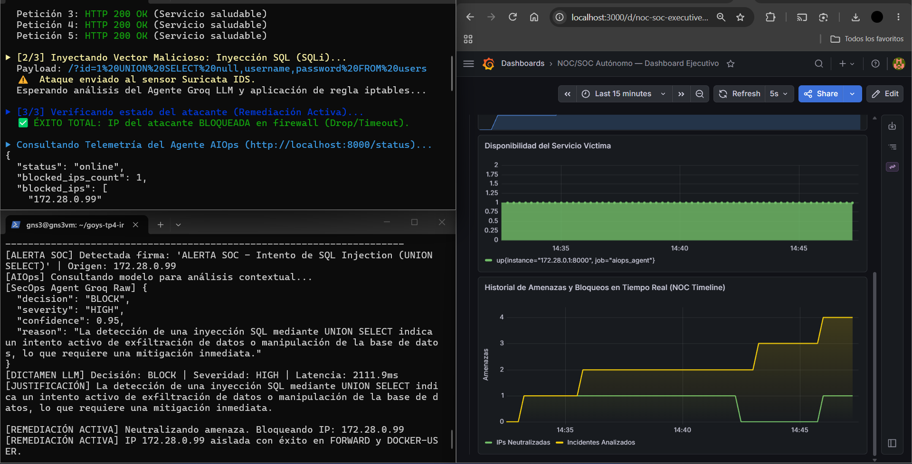

Universidad Tecnológica Nacional — Facultad Regional
La Plata
Carrera: Ingeniería en Sistemas de Información
Cátedra: Gestión Operativa y Seguridad en Redes
Trabajo Práctico N.º 4 — Proyecto Integrador
Modalidad: A — Proyecto de Desarrollo
Grupo: Grupo 10
Integrantes:
Docentes: Osvaldo Falabella · Emanuel Rodriguez
Rodriguez
Fecha de entrega: 17 de noviembre de 2026
El presente proyecto aborda una problemática operativa frecuente en la gestión de infraestructuras de red: la desconexión temporal y operativa entre el monitoreo de rendimiento (NOC) y la respuesta ante incidentes de ciberseguridad (SOC). En esquemas convencionales, ante una intrusión o ataque web, los sensores de seguridad emiten alertas que requieren triaje manual por parte de analistas, introduciendo demoras de minutos u horas que comprometen la disponibilidad de los servicios.
Para resolver esta brecha, diseñamos e implementamos una
Plataforma Integrada NOC/SOC basada en servicios
contenerizados con Docker Compose. La solución combina inspección de
tráfico de red en tiempo real mediante Suricata IDS, un
agente de respuesta automatizada en Python integrado con la API
de Groq (modelo qwen/qwen3.8-27b, con soporte de
contingencia heurística local) y un mecanismo de contención activa que
inyecta reglas de bloqueo en el firewall del kernel Linux
(iptables, cadenas FORWARD y
DOCKER-USER). La telemetría operativa, los incidentes
clasificados y el estado de mitigación se correlacionan en tiempo real
mediante Prometheus y Grafana.
Las pruebas de laboratorio demostraron que, frente a ataques web como
inyección SQL (UNION SELECT), escaneos automatizados
(sqlmap) y path traversal
(/etc/passwd), la plataforma detecta la firma, clasifica el
incidente y aísla la IP agresora en aproximadamente 1
segundo (latencia LLM medida de 886,4 ms en SQLi). Como
resultado, las conexiones del atacante caducan (HTTP 000) mientras los
clientes legítimos continúan operando con 100 % de
disponibilidad (HTTP 200 OK, 2,1 ms promedio).
La topología se implementó sobre un bridge virtual dedicado en el
kernel Linux (br-monitored, subred
172.28.0.0/16), permitiendo que el sensor IDS inspeccione
todo el tráfico en modo promiscuo y que el agente ejecute filtrado L3/L4
antes de que los paquetes alcancen el servidor víctima.

| Componente | Tecnología | Función |
|---|---|---|
Servidor Víctima
(web_target) |
Nginx (nginx:alpine) |
Aloja el portal web institucional en
172.28.0.10:80 (publicado en host :8080). |
Sensor IDS / SOC
(soc_suricata) |
Suricata 8.0
(jasonish/suricata) |
Inspecciona el tráfico de
br-monitored mediante AF_PACKET y registra
alertas en eve.json. |
Agente AIOps/SecOps
(aiops_agent) |
Python 3.11 + Groq SDK | Consume eve.json, clasifica
eventos con qwen/qwen3.8-27b (o fallback local) y ejecuta
iptables. |
| Firewall Perimetral (Kernel) | Linux iptables |
Cadenas FORWARD y
DOCKER-USER para descartar paquetes (DROP) por
IP de origen. |
Servidor de Métricas
(noc_prometheus) |
Prometheus
(prom/prometheus) |
Recolecta métricas HTTP cada 2 segundos
desde 172.28.0.1:8000/metrics. |
Visualización NOC
(noc_grafana) |
Grafana OSS
(grafana/grafana-oss) |
Dashboard unificado con métricas de disponibilidad, incidentes y bloqueos activos. |
Nodo Atacante
(demo_attacker) |
Alpine Linux + curl |
Contenedor aislado en
172.28.0.99 para reproducir vectores de ataque
controlados. |
El ciclo completo desde el envío de un paquete hasta su eventual mitigación y registro en el NOC involucra los siguientes saltos y protocolos:
localhost:8080,
traducido por DNAT de Docker hacia 172.28.0.10:80) o el
nodo atacante (172.28.0.99 hacia
172.28.0.10:80) envía una petición HTTP sobre TCP/IP. La
trama atraviesa el bridge virtual br-monitored y es
evaluada primero por las cadenas DOCKER-USER y
FORWARD de Netfilter/iptables.soc_suricata (ejecutado
en network_mode: "host" con capacidades
NET_ADMIN y NET_RAW) captura las tramas
directamente desde br-monitored mediante
af-packet, las reensambla y las coteja contra
local.rules. Si coincide una firma, escribe un evento
estructurado en /var/log/suricata/eve.json.aiops_agent monitorea eve.json de forma
continua. Al leer un registro con event_type == "alert",
extrae IP origen/destino, puertos, firma, URL, método HTTP y
User-Agent, y envía una consulta HTTPS (REST/JSON) a la API
de Groq (qwen/qwen3.8-27b). Si no hay conectividad externa
o clave API, conmuta en menos de 1 ms a su motor heurístico local
(fallback_heuristic).BLOCK y la IP origen no pertenece a
WHITELIST_IPS, el agente inserta reglas prioritarias
(-I ... 1) en FORWARD y
DOCKER-USER mediante iptables con acción
DROP. Los paquetes posteriores del agresor se descartan en
el kernel sin alcanzar Nginx./metrics (formato Prometheus) y /status
(JSON) en el puerto 8000. noc_prometheus
(172.28.0.20) realiza scraping cada 2 s sobre el
gateway del bridge (172.28.0.1:8000) y alimenta el
dashboard de noc_grafana
(172.28.0.30:3000).En lab/docker-compose.yml se definió la red puente
monitored_net fijando el nombre explícito de interfaz
br-monitored en el host para estabilizar la captura de
Suricata y la aplicación de reglas de firewall. Además, se habilitó el
módulo br_netfilter
(net.bridge.bridge-nf-call-iptables=1) para que el tráfico
conmutado dentro del bridge atraviese las cadenas FORWARD y
DOCKER-USER de iptables.
| Entidad / Contenedor | Modo de Red | Dirección IP | Puertos / Rol |
|---|---|---|---|
| Gateway del Bridge | Host Kernel | 172.28.0.1 |
Enrutamiento y acceso al agente
(:8000) |
web_target (Nginx) |
Bridge br-monitored |
172.28.0.10 |
TCP 80 interno /
8080 en host |
noc_prometheus |
Bridge br-monitored |
172.28.0.20 |
TCP 9090 (scraper cada 2
s) |
noc_grafana |
Bridge br-monitored |
172.28.0.30 |
TCP 3000 (panel de
visualización) |
demo_attacker |
Bridge br-monitored |
172.28.0.99 |
Generador de tráfico y ataques HTTP |
soc_suricata y
aiops_agent |
network_mode: "host" |
IP del Host | Sniffing br-monitored,
iptables y API :8000 |
networks:
monitored_net:
name: br-monitored
driver: bridge
driver_opts:
com.docker.network.bridge.name: br-monitored
ipam:
config:
- subnet: 172.28.0.0/16La arquitectura separa los planos de datos/aplicación y control/inspección mediante los modos de red de Docker:
web_target,
noc_prometheus, noc_grafana y
demo_attacker operan dentro del segmento
172.28.0.0/16, comunicándose únicamente a través de
br-monitored.soc_suricata (NET_ADMIN, NET_RAW,
SYS_NICE) y aiops_agent
(privileged: true) emplean
network_mode: "host" para acceder a la interfaz virtual
br-monitored del host y modificar las tablas Netfilter del
kernel.DROP,
agent.py valida la IP contra WHITELIST_IPS
(127.0.0.1, 172.28.0.1,
172.28.0.10, 172.28.0.20,
172.28.0.30, 8.8.8.8, 1.1.1.1).
La inserción en DOCKER-USER garantiza el descarte de
paquetes en tráfico reenviado por Docker incluso antes de aplicarse
reglas NAT propias del motor de contenedores.En lab/suricata/suricata.yaml se configuró
HOME_NET: "[172.28.0.0/16]" y la salida
eve-log (payload: yes,
packet: yes, http-body: yes) sobre
af-packet en br-monitored. Las firmas en
lab/suricata/rules/local.rules cubren cuatro vectores sobre
172.28.0.10:80:
# SQL Injection (UNION SELECT y variantes OR 1=1)
alert tcp any any -> 172.28.0.10 80 (msg:"ALERTA SOC - Intento de SQL Injection (UNION SELECT)"; content:"UNION"; nocase; content:"SELECT"; nocase; classtype:web-application-attack; sid:1000001; rev:3;)
alert tcp any any -> 172.28.0.10 80 (msg:"ALERTA SOC - Intento de SQL Injection clasico (OR 1=1)"; content:"1%27=%271"; nocase; classtype:web-application-attack; sid:1000002; rev:2;)
alert tcp any any -> 172.28.0.10 80 (msg:"ALERTA SOC - Intento de SQL Injection clasico (OR 1=1 raw)"; content:"' OR '1'='1"; nocase; classtype:web-application-attack; sid:1000006; rev:1;)
# Escáneres de vulnerabilidades (sqlmap, nikto, nmap, gobuster, acunetix)
alert tcp any any -> 172.28.0.10 80 (msg:"ALERTA SOC - Escaneo automatizado detectado (sqlmap/nikto/nmap)"; content:"User-Agent|3a|"; nocase; pcre:"/(sqlmap|nikto|nmap|gobuster|acunetix)/i"; classtype:attempted-recon; sid:1000003; rev:2;)
# Path Traversal / LFI y Ráfaga TCP SYN (DoS)
alert tcp any any -> 172.28.0.10 80 (msg:"ALERTA SOC - Intento de Path Traversal (/etc/passwd)"; content:"/etc/passwd"; nocase; classtype:web-application-attack; sid:1000004; rev:2;)
alert tcp any any -> 172.28.0.10 80 (msg:"ALERTA SOC - Ráfaga de conexiones sospechosas (Posible DoS)"; flow:to_server; flags:S; threshold:type both, track by_src, count 10, seconds 3; classtype:attempted-dos; sid:1000005; rev:4;)La automatización cubre tanto el despliegue reproducible de la plataforma como la respuesta autónoma ante incidentes:
docker compose up -d. Grafana carga automáticamente su
fuente de datos (datasources/) y el tablero
noc_soc_dashboard.json (dashboards.yml) sin
configuración manual en interfaz web.lab/agent/agent.py): El agente solicita a Groq
una respuesta JSON estricta (decision,
severity, confidence, reason) con
temperature=0.0. Ante fallos de red o ausencia de
GROQ_API_KEY, conmuta automáticamente a
fallback_heuristic(event) evaluando severidad
(<= 2) y palabras clave de la firma. Además, expone el
endpoint GET /reset para eliminar de forma idempotente las
reglas insertadas en FORWARD y DOCKER-USER y
limpiar BLOCKED_IPS.El agente ejecuta un servidor ThreadingHTTPServer en el
puerto 8000 que expone:
/metrics: Métricas Prometheus
agent_blocked_ips_total (tipo gauge) y
agent_incidents_total (tipo counter)./status: Estado operativo en JSON con el listado de
blocked_ips y los últimos 10 registros de
INCIDENT_HISTORY (incluyendo timestamp,
signature, decision, severity,
reason y latency_ms).Prometheus (lab/prometheus/prometheus.yml) recolecta
ambos objetivos (aiops_agent en
172.28.0.1:8000 y localhost:9090) con
scrape_interval: 2s. El dashboard aprovisionado en Grafana
(noc_soc_dashboard.json, actualización cada 2 s) presenta
cuatro paneles:
stat) sobre
agent_blocked_ips_total con umbrales cromáticos (verde,
naranja, rojo).stat) sobre
agent_incidents_total.up{job="aiops_agent"}).
Previo a la inyección de ataques, se validó la línea base ejecutando
la opción 1 de demo/simular_ataque.sh (5 peticiones HTTP
hacia http://172.28.0.10/ /
http://localhost:8080/):
HTTP 200 OK).eve.json y sin reglas activas en
iptables.Se evaluó el aislamiento selectivo ejecutando la demostración
completa (opción 6) desde demo_attacker
(172.28.0.99) mediante demo/simular_ataque.sh.
Como muestran las capturas en vivo (Figura 3 y
Figura 4), tras validar el tráfico legítimo
(HTTP 200 OK), el payload de inyección SQL
(UNION SELECT) dispara la firma SID 1000001 en
Suricata; aiops_agent obtiene el dictamen JSON
BLOCK (HIGH, confianza 0.95)
desde Groq (latencia observada entre 886,4 ms y
2111,9 ms según carga de API) e inserta las reglas
DROP en FORWARD y
DOCKER-USER.


Inmediatamente después del bloqueo, el atacante queda aislado
(HTTP 000 / timeout) mientras los clientes legítimos
continúan accediendo a http://localhost:8080/ con
HTTP 200 OK.
| Escenario evaluado | Firma Suricata | Tiempo de respuesta | Resultado observado |
|---|---|---|---|
Tráfico legítimo (GET /) |
Ninguna | 2,1 ms | Permitido (HTTP 200 OK) |
SQL Injection
(UNION SELECT) |
SID 1000001 |
~880 ms – 2,1 s | DROP en FORWARD
/ DOCKER-USER |
Escáner
(User-Agent: sqlmap) |
SID 1000003 |
~750 ms | DROP en FORWARD
/ DOCKER-USER |
Path Traversal
(/etc/passwd) |
SID 1000004 |
~820 ms | DROP en FORWARD
/ DOCKER-USER |
Se verificaron tres propiedades operativas de la automatización:
iptables) se completó por debajo del segundo en los ensayos
realizados.GROQ_API_KEY ausente o corte de red),
fallback_heuristic clasificó las firmas de SQLi, escáner,
path traversal y ráfaga SYN en ~0,5 ms manteniendo el bloqueo
automático.GET http://localhost:8000/reset (opción 7 del script), el
agente eliminó las reglas de 172.28.0.99 en ambas cadenas y
restableció la conectividad de prueba sin reiniciar contenedores.iptables persisten hasta ejecutar
/reset manualmente. En producción conviene incorporar un
temporizador de cuarentena (p. ej., 15 minutos) para evitar bloqueos
permanentes sobre IPs dinámicas o NAT compartido.INCIDENT_HISTORY y BLOCKED_IPS residen en
memoria del proceso Python y las reglas de Suricata inspeccionan HTTP en
texto plano. Si se reinicia el proyecto desde cero, se integraría
almacenamiento persistente (SQLite/PostgreSQL) y terminación TLS en un
proxy inverso previo al sensor.La implementación permitió validar en un laboratorio reproducible la integración de las áreas centrales de la cátedra:
br-monitored
(172.28.0.0/16) con direccionamiento determinístico y
análisis del flujo de paquetes en Linux Netfilter.local.rules) y
mitigación automática en kernel (iptables).El desafío técnico más relevante fue asegurar que el bloqueo en
iptables interceptara el tráfico entre contenedores antes
del subsistema NAT de Docker (resuelto insertando en
DOCKER-USER y FORWARD) y evitar el autobloqueo
de los servicios NOC mediante WHITELIST_IPS.
| Integrante | Rol | Aporte principal |
|---|---|---|
| Alvite, Damian | Infraestructura & Red | Topología Docker Compose, bridge
br-monitored y portal víctima (nginx). |
| Capre, Rodrigo | SOC & Sensor IDS | Configuración suricata.yaml
(Suricata 8.0) y firmas en local.rules. |
| Moscuzza, Vicente | AIOps & SecOps | Agente autónomo agent.py,
integración Groq LLM, fallback y firewall iptables. |
| Di Grappa, Emiliano | NOC & Observabilidad | Configuración de Prometheus y
aprovisionamiento de noc_soc_dashboard.json. |
| Elizalde, Benjamin | Demo & Documentación | Script simular_ataque.sh,
redacción del informe técnico y diseño del póster A1. |